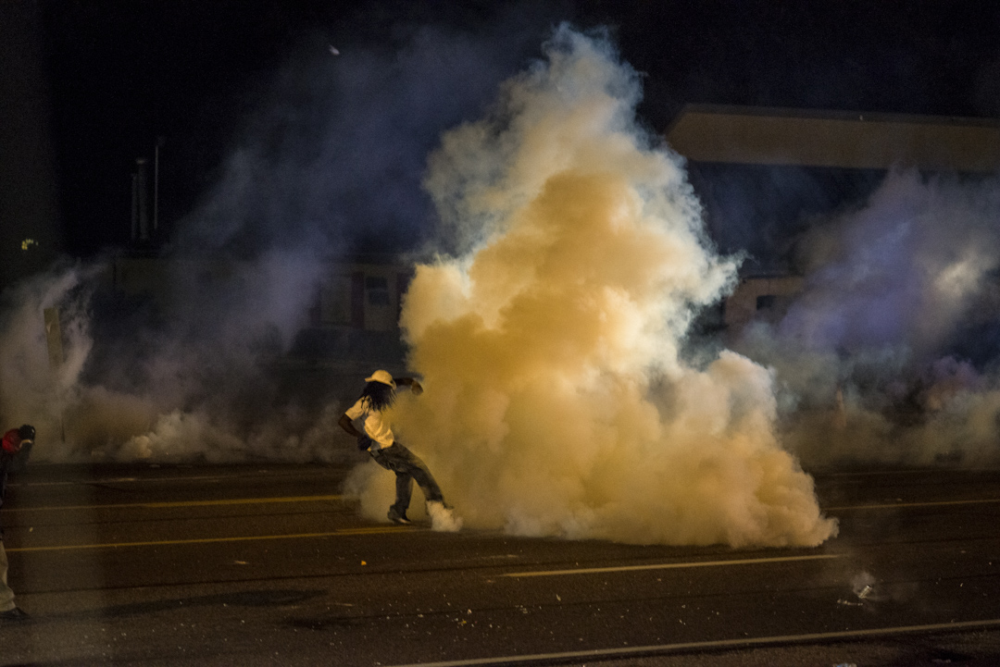
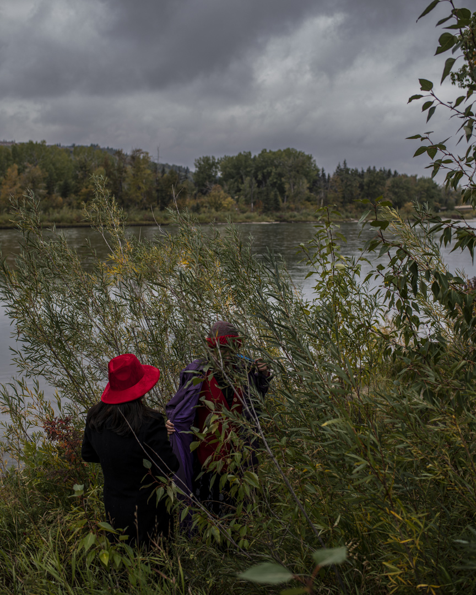
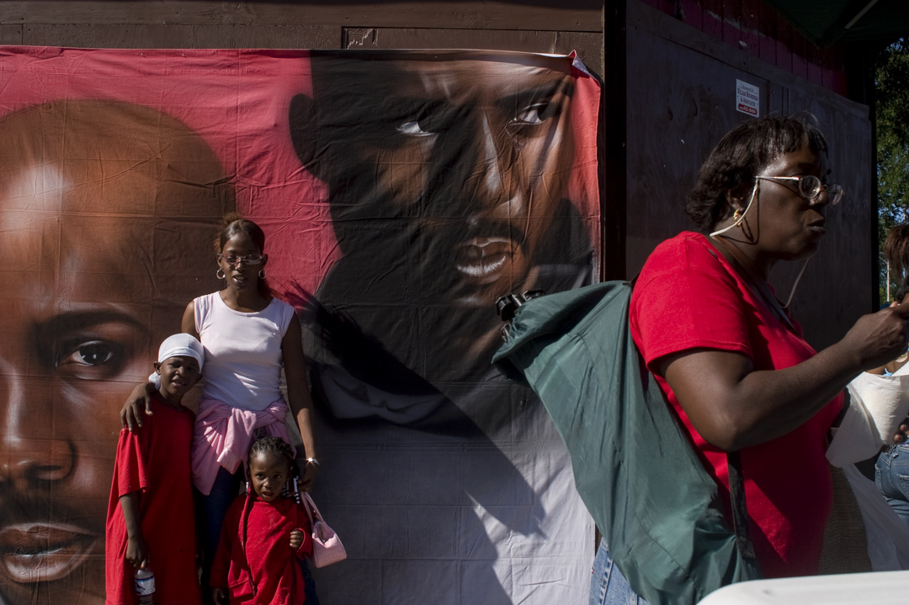
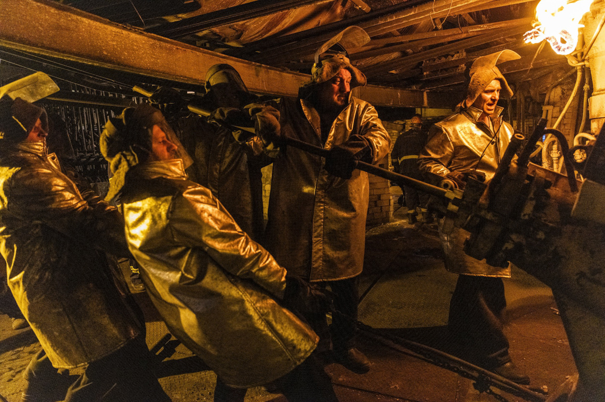
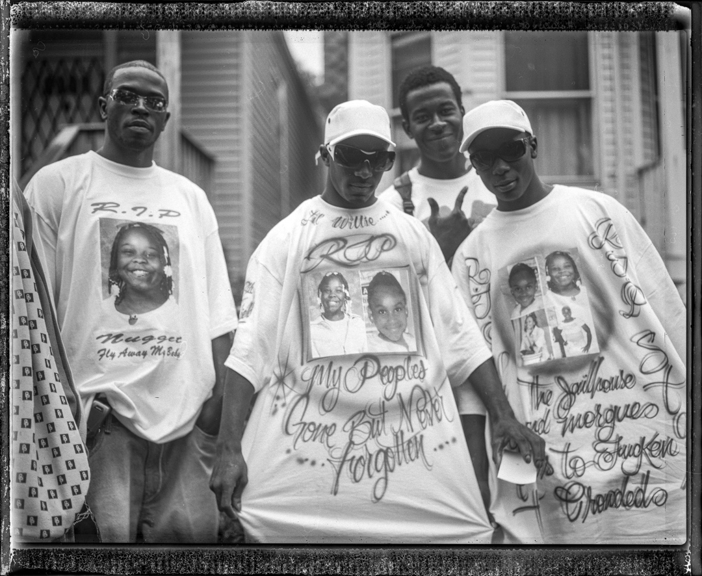
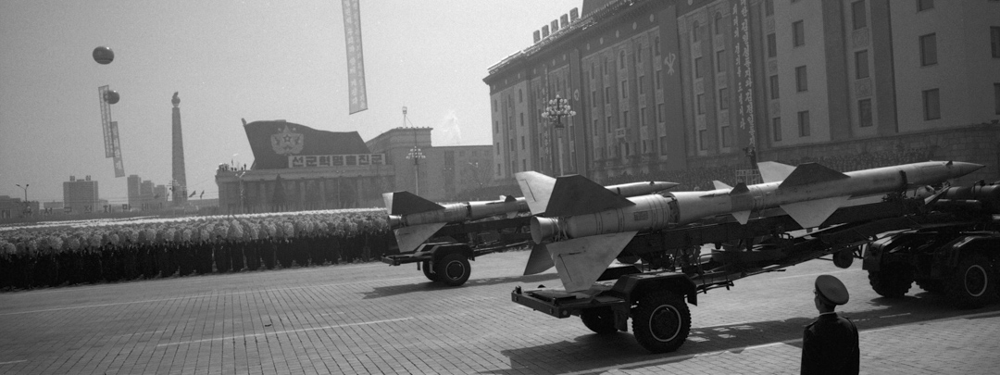

To witness is to stay.
Witness is Artefakt's founding pillar — long-form documentary photography and film grounded in community trust, earned access, and ethical rigor. Years rather than weeks. Return visits rather than parachute coverage. The photographs that follow are drawn from a practice that has continued, without interruption, for over two decades across Chicago, Calgary, and the broader Americas.











Witness — Archive · Licensing
14 / 14
The Archive
Every frame in Witness is accessioned to the permanent Artefakt Archive — catalogued, held with consent, and available to researchers, curators, and community partners by appointment.
Archive Access & Licensing
For archive access, print licensing, and press inquiries, contact jon@artefakt.foundation.
← Home
Active programming in Calgary and Chicago.
Learn →